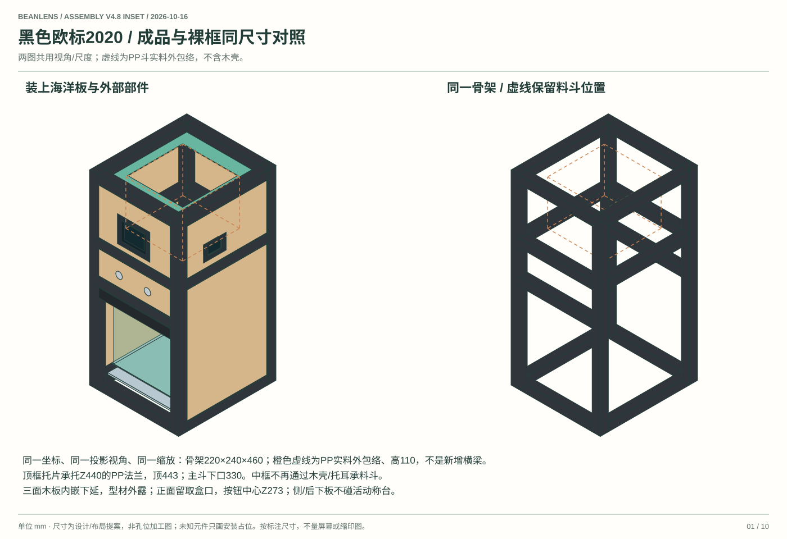

把生豆验收
做成可复核的证据正点原子K230D BOX ＋ 已有ESP32-C6-LCD-1.47
一次装料，小批下落，前后两面取图。本机显示进度和疑似图，保存与咖啡样本对应的记录。
先读第04、05章核对相机与接线，再按第09章分批采购；第10章逐步装配。十二张矢量图可放大。材料价格与勾选进度保存在当前浏览器。
V4.4：按已选元件重新设计
前贴主屏、侧置状态屏、24V并联供电、MG996R、1kg称重。 本版替代V4.3。上一版把支撑件画成横贯豆路的灰板、把BOX挂在箱体外，并给称重填了未经核实的低价；本版均已修正。
| 项目 | 本版决定 | 价格与验证状态 |
|---|---|---|
| 主板与卡 | 正点原子K230D BOX＋32GB TF，屏面朝前、主板在箱体内 | 用户报价257元；屏幕开孔按实物，不能按效果图放大。 |
| 双摄 | GC2093＋M12 90°无畸变镜头，两套 | 用户合计114.32元；仍需确认BOX接口、IR-cut、近焦与90°定义。 |
| 舵机 | MG996R位置舵机，独立6.0V供电 | 用户报价15.58元；不买连续旋转版，不把原厂电流当兼容件实测值。 |
| 称重 | 1kg四线全桥单点传感器＋NAU7802 | 0.1g显示；净0–500g静态误差目标±0.1g，传感器与砝码待询价。 |
| 灯 | 24V普瑞Ra98灯带，前后各两条 | 假设共0.4m、≤20W/m；每米功率和剪切间距待确认。 |
| 电源 | 一只24V成品稳压适配器，分别降5.0V与6.0V | 推荐24V/4A；72W需满足文中边界并通过带载测试。 |
| 外壳 | 原色海洋板＋银色2020；下方开放取豆盒 | 木盒垂直；只有内部四片PP衬板收口；灰色托耳不挡豆路。 |
仍先一槽、再三槽、最后五槽。相机持续运行，光电只提示经过；刷条不保证间距，闸门一次不保证颗数。软件、训练模型与设备协议仍需实现。
屏幕贴装、木盒与取豆空间
BOX主屏贴在前固定面板，屏幕后方整套主板进入箱内服务腔。已有C6小屏贴在右侧，显示网络、闸门和供电告警。两只金属按钮仍在前面。没有外伸屏幕支架。

内置image_gen生成的外观概念，屏幕内容为示例。实际BOX外形64.30×47.60×15.40，不含突起物；正式开孔、插头和内部余量以下图及实物为准。[1]


| 组件 | 尺寸起点/mm | 实际装配 |
|---|---|---|
| 骨架 | 220宽×240深×460高 | V4.6：连续460柱×4；200梁×6、180梁×8，净4.48m；常规内角码。 |
| 预留外廓 | 包板约232宽×252深；骨架高460 | 脚套、端盖、插头及线缆另按实物留量；此尺寸不等于运输外廓。 |
| 木料箱 | 外158×158×110，板厚6 | 前后158×110各1；左右146×110各1；底部开放，PP2焊筋留量。 |
| PP内衬 | PP-H2：净上136×136、净下110×30、垂直高110 | 四片梯形PP片拼成居中收口，无斜向偏置。 |
| 料斗托耳 | 左右各40×30×6（装配提案） | 连接中框；中间110×30通路完全敞开，不是整块灰板。 |
| 五槽 | 外宽110、高50、净宽各14 | 有效94＝5×14＋4×3＋2×6；宽度不能强行等同22目上限。 |
| 闸与视野 | 闸z292、出口z280；视野120×67.5 | 顶z275、底z207.5、光轴z241.25，镜头距豆流75起试。 |
| BOX安装 | 64.30×47.60×15.40的外壳包络 | 先用纸样定位；内部至少留约35深的服务空间，插头转弯另量。 |
| 收豆仓 | 前开口约180宽×170高 | PP盒≤160×170×130，向前取出；盒与平台不碰墙。 |
| 称台 | 170×180，台面z45附近 | 空载承重件＋盒目标≤250g；加500g样本约≤750g，1kg仍需过载保护。 |
BOX整套优先用内侧托架夹持原壳，不拆屏幕与主板。前面只露屏幕/薄边框，主板和插头朝内。固定主面板不作为检修门；检修从侧后面进入。USB、TF和板载按键留访问口，周边装不透光隔舱，屏幕背光不得进入拍摄区。
1kg量程含盒、平台和豆子的总重；去皮不会提高承载能力。收豆盒只经传感器承载，不接滑轨。光学底板z195、通口130×50、短唇约10，盒口≤z175；开放仓进光需实拍验证。
PP料斗怎样DIY，灰色托耳是什么


外木盒的四面垂直，内部PP四面收口。 灰色托耳只在左右两边，把木盒连接到料斗中框。它们不跨过110×30落豆口。旧图的横向灰条应废弃，不要照它做整块挡板。
| PP净片，不含折边 | 数量 | 平面尺寸/mm | 含义 |
|---|---|---|---|
| 前后梯形片 | 2 | 上边140、下边110、斜面高122.98（约123） | 高不是垂直110；sqrt(110²＋55²)。 |
| 左右梯形片 | 2 | 上边140、下边30、斜面高111.02（约111） | sqrt(110²＋15²)；四条角边长度约123.9一致。 |
| 固定折边 | 按纸样 | 上沿约10–15、接缝约10，另加 | 折到豆路外。图中净尺寸不能包含折边。 |
| PP材料 | 约A3一张起试 | 0.5mm优先，0.8mm可试 | 食品接触资料、平滑无味；1mm手折更困难。 |
只用冷加工完成第一套
- 先在硬纸上画四片净梯形，再加折边；不要只按一个梯形剪四片。
- 剪纸样并拼成净高110、上下口居中的空底料斗。试放木盒，检查底口110×30。
- 纸样描到0.5mm PP。用剪刀剪短边；长直边用金属尺和美工刀多次浅划后裁开，下面垫切割垫。
- 只在外翻折边做浅压痕，用圆钝工具压折；不要割穿主豆路，不必购买热风枪。
- 四片接缝的搭边朝外，用外部小夹片/压条保持形状，上沿压在木盒边缘。PP普通胶粘接不可靠，不把热熔胶当主连接。
- 底口用可拆槽盒定位，接缝顺着豆流、不留逆向台阶；所有螺钉与锐边避开豆路。先手推样本检查残留，再装闸门。
工具：钢尺、卡尺、细记号笔、硬纸、剪刀、美工刀、切割垫、圆钝压痕工具、小夹子。木盒另需预切板、手钻/钻头、螺丝刀；PP3mm隔板请店家预切或用适合塑料的细齿锯。按模板直剪只适合薄内衬，不适合厚隔板。打印图为缩放图，不可直接当1:1刀模。
| 部位 | 配置 | 检查 |
|---|---|---|
| 五槽 | 净宽14、净深12；上部深30过渡到12 | 先一槽测试。超大豆、贴连和架桥不会被闸门自动解决。 |
| 滑片 | 6061-T6铝板110×45×2mm、前后行程15mm | 双MGN9H＋120×30×3转接板承担导向；槽缝按实厚＋总隙0.2–0.4mm起试，不沿用薄POM导槽。 |
| MG996R | 位置舵机＋金属安装耳＋有让位连杆＋两限位 | 机身原厂约40.7×19.7×42.9；15.58元件按实物量，不能沿用MG996R孔位。[9] |
| 驱动几何 | 舵臂孔半径16mm，球心距60mm；相对角±27.953° | 2×16×sin27.953°≈15mm；共面居中理想几何。原23mm高度偏置须重做支架；球头不负责导向。 |
| 舵机位置 | 后侧上方支架：轴约z315、壳下沿不低于z272 | 闸片在z292；约23高度差须重设计支架/连接耳，不能直接按斜杆过渡。M4短连杆候选见修正说明；不得伸入两摄视锥，先纸样检查。 |
| 轻刷 | 可拆PBT0.10–0.15mm，侵入各1–2 | 保留无刷对照；碎豆能过、无脱毛、无新增破损才保留。 |
已选双摄与24V灯带布局
两只GC2093＋M12 90°无畸变镜头，用户合计114.32元。相同传感器名称不等于相同MIPI线序；仍向商家确认与正点原子BOX两路接口、固件、IR-cut及排线兼容。近距工作距离75mm只是起点，不凭90°或无畸变标题保证成像。[2]


| 核对项 | 做法 | 通过证据 |
|---|---|---|
| 视角 | 问清90°是水平还是对角；用标尺实测 | 75mm工作距离看全120mm视宽，中心与两端都清晰。 |
| 近焦/景深 | 手动调焦后锁镜；前后±6mm移动静止豆 | 沟槽、虫孔候选、边缘破损可见；不得只交远景样张。 |
| 双摄 | CSI2＋CSI1运行；同规格模组与兼容线 | 两路实际fps、时戳和内存记录；不假定硬同步。 |
| 安装 | 前后独立180mm型材梁，M5螺母＋L架＋载板＋尼龙柱 | 与木门无关；孔距按PCB，断电插排线并做应力释放。 |
| 屏幕改位后的排线 | BOX前贴后，前摄线短、后摄可能更长 | 先拉软线测实际路径，再请原厂确认最长支持；不强行沿用150mm。 |
| 曝光与颜色 | 本固件确认AE/WB可控，固定ISP与灯热稳定 | 落豆短曝光图与灰参考块记录；光电开/关无明显污染。 |
6000K/Ra98与5000K/Ra90怎么选
在相近亮度、稳定驱动且显色标称可信时，优先试6000K/Ra98。 6000K只是光源偏冷的白点，不会自动损坏拍摄；灰参考块可用于设置并锁定白平衡。白平衡不能补回光谱缺失，也不能证明颜色完全正确。Ra面向人眼，不能把98直接解释成98%分类准确率；看SPD、R9/R12、TM-30或TLCI报告，并用本机两只GC2093验证。此选择是工程判断，尚无这两条具体灯带的对照测试。[32][33]
四段用同一批、同一色温，不混6000K和5000K。相机有IR-cut；锁曝光、增益、白平衡和ISP设置，不让黑豆经过时自动提亮。暖机至灰参考读数稳定，再比较正常、黄褐、发黑和浅色豆；检查RGB均未饱和且暗部有细节。每组至少连续采100帧检查条纹与亮度变化，再做实际落豆短曝光；最终用选定灯采训练/验证数据。频闪无法靠高Ra消除。
普瑞原厂有跨色温的Thrive产品，不能推论所有Ra98只做6000K；你看到的是卖家的选项。若必须5000K，可向灯带厂询证。同类可核查参数例为ADY-C120-0824-9850：24V、12W/m、8mm、50mm切点，4×100mm为4.8W；它不是已核实的普瑞灯带，页面对Ra的表述也须确认，亮度够不够0.1ms曝光仍要测试。原预算仍按≤20W/m留8W，不把例子规格套到你所购灯带。[35]
四段灯带并联，不需要四只电源
前相机左右各一条、后相机左右各一条，初试每段100mm，共0.4m。灯条竖向覆盖约67.5mm拍摄高度，朝豆帘斜照约35–45°，离豆流横向中心约60–75mm、前后约35–50mm起试。实际长度服从剪切间距；若最小切点125mm，改为4×125mm并重算功率，不能硬剪100mm。
每条先贴在铝散热条，再装乳白扩散片和小遮光边；让相机看豆面，看不到灯芯的直射亮点。前后都要布灯，不依赖穿透生豆。Ra98是所选灯带标称，不保证相机自动色准；固定同一批色温（本次两选一倾向6000K/Ra98，前提是参数可信和实拍通过）后重新采训练图。[22][23]
接法：四段各自的＋接24V分线端子、−接24V返回端，等于四路并联。不是把四段串联；不能要求每段只分到6V。若24V恒压成品灯带自带限流，直接按规格供电，不额外串裸LED恒流驱动。连续直流点亮，首版不加低频PWM调光。
相机之间不能放整块不透明背板；中性背景围在对向镜头周围。外部木色保留，光学腔内另加哑光中性衬板，屏幕服务腔与灯、光电线分开。
相机仍先连续采集，再选择少量裁图
30fps约33.3ms一帧，60fps约16.7ms一帧；并不是每几秒截图。逐槽跟踪同一颗豆，复制清晰完整的正反面裁图，关闸排空后分类，只存疑似/拒判与抽查证据。
出口下5–72.5mm为视野。理想初速0穿越约89.65ms；初速0.5m/s约71.69ms，底部约1.293m/s。120mm宽对应1920像素时，0.1ms曝光理想拖影约2.07像素；这是计算起点，不是实测。短曝光降低拖影，不能消除滚动快门形变。[13][14]
重新配置：一个24V电源，三条并联支路


容量原要求24V/4A（96W）起；本轮具体候选GST120A24-P1M为24V/5A（120W），交流部分留在机外。 主低压开关、保险和分线端子后，分别给灯、逻辑降压、舵机降压；2167由5V逻辑支路供电。不是逐级把24V降12V、再6V、再5V。你未提供现有适配器型号；旧版12V/3A不能直接给24V灯带，36W容量也不按本版上限继续使用。
| 支路 | 配置与负载 | 设计容量/约束 |
|---|---|---|
| 24V直供 | 四条灯带并联；工业光电仅在选备选时接入 | 灯按0.4m×20W/m＝8W；光电与输入模块合计预留1W。 |
| 24V→5.0V | D36V50F5→BOX电源USB＋C6电源USB＋2167 | 总预留4A/20W；BOX双摄/屏/TF含在其中，不再另外给相机接5V。 |
| 24V→6.0V | 第二只独立降压模块→MG996R | 输出持续≥3A、短时5A为设计余量；实际舵机电流和温升须测。 |
| C6板载3.3V | 已匹配的NAU7802模块、2167信号上拉、I²C上拉 | 本版新增外设目标≤35mA；测板载稳压温升/电压余量，超出才增专用3.3V降压。 |
| GPIO/无源开关 | 按钮、限位、PWM、UART | 信号不等于电源；不能给舵机或灯带从GPIO供电。 |
当前询价候选为固定5V的Pololu D36V50F5（#4091）与固定6V的D36V50F6（#4092）。实际持续电流随输入压差与散热变化；5V/4A、6V/3A及短时5A设计目标都要带载验温升与压降，不能仅按商品电流标题认定合格。旧XL4015匿名模块不再是默认采购型号。
容量复算：本轮选120W，原96W下限从何而来
按降压效率85%的保守规划：灯8W＋光电1W＋5V×4A÷0.85＋6V×3A÷0.85≈53.7W；舵机短时按5A预算时约67.8W。持续负载再留25%余量约67.1W，因此真正24V/3A（72W）可作为较紧的候选，但突发余量小。24V/4A更适合首台调试；电源容量大不代表强迫负载吃4A。
若用4×125mm、20W/m，灯为10W；若用0.4m、30W/m则为12W，必须重算。表中的电流是设计预留，不是厂家功耗或实测值。GST90A24-P1M的24V/3.75A、90W可作为有原厂资料的参考，实际价格和接头待询；不把无资料的“足功率”当证据。[31]
不需要B2403S＋AMS1117
B2403S-1WR3是24V→3.3V、1W、非稳压输出隔离模块，额定输出约303mA；不能再接需要压差的AMS1117-3.3去稳成3.3V，也不适合承担本机两块主板或MG996R。AMS1117不是开关降压，若从24V直接降3.3V，损耗为(24−3.3)×I；仅0.1A就约2.07W且还涉及输入耐压。[25]
C6已用板载ME6217把5V转3.3V；BOX内部已有PMIC与双摄电源，不另给GC2093接外部3.3V。NAU7802外设优先用C6的3.3V短线供电；3.3V供电时设置VDDA约3.0V并按所选模块的参考/激励连接资料配置，不强设内部3.3V LDO。仅作假设示例：若是支持低压的2mV/V、1kg桥，在3.0V激励下0.1g约对应0.6µV；这不是L6J1或HJ-AZ4实测参数；24位标题不能保证这个信号在整机中可靠。[26][28]
光耦隔离与接地，分别理解
默认2167开集电极输出只上拉3.3V，无需24V输入光耦。只有B3F-20C1经核验为24V NPN低端输出后，才启用备选光耦电路。这里两只普通降压与传感器同接24V返回端，光耦用于信号电平转换和干扰缓冲，不是完整电源隔离。真隔离还需隔离供电和所有跨界信号隔离，单加B2403S后又把地线连回去会失去隔离作用；本机首版不增加这一复杂度。
24V分线处采用星形返回：灯、舵机降压和主板降压分别回端子。舵机大电流不经过C6/NAU地线。主线与舵机回路建议0.75mm²铜线起试，短USB线按电流和压降核对，杜邦线只接信号。舵机6V端附近放1000µF/16V＋100nF电容，5V板端约470µF/10V；电容要与模块允许的输出电容/启动条件匹配，不能替代电源容量。
新采购表采用32VDC MINI车用保险及匹配保险座：主4A、灯1A、5V降压输入2A、6V降压输入3A作为起试值（原2.5A换为常见3A规格）；保险必须按线径、启动浪涌和实际峰值协调，不能指望保险保护夹豆。主开关/插头/端子额定直流至少覆盖24V/4A，极性和接头实测；不在海洋板箱里接裸220V。
| 连接 | 源端 | 目的端 | 说明 |
|---|---|---|---|
| 两板串口 | BOX PH2.0接口1 TX / IO40 | C6 RXD / GPIO17 | BOX UART1 → C6 RX；3.3V逻辑。 |
| 两板串口 | BOX PH2.0接口1 RX / IO41 | C6 TXD / GPIO16 | C6 TX → BOX UART1 RX；不使用UART0系统日志口。 |
| 两板公共地 | BOX PH2.0 GND | C6 GND / 电源公共地 | 两块板独立5V供电，PH2.0的5V线不连。 |
| 舵机PWM | C6 GPIO2 | MG996R信号 | 50Hz硬件PWM；独立6.0V供电；接受3.3V信号需实测。 |
| 称重SDA | C6 GPIO18 | NAU7802 SDA | 逻辑、上拉均3.3V；地址0x2A，驱动需调试。 |
| 称重SCL | C6 GPIO19 | NAU7802 SCL | 试100kHz；按模块是否自带上拉检查。 |
| 关闸限位 | C6 GPIO0 | 开关NO；COM接GND | 输入上拉，压下为低。 |
| 开闸限位 | C6 GPIO1 | 开关NO；COM接GND | 输入上拉，压下为低；两者同时低为异常。 |
| 开始/暂停键 | C6 GPIO3 | 按钮NO；另一端GND | 短按按状态解释，先消抖。 |
| 停止键 | C6 GPIO23 | 按钮NC；另一端GND | 正常低，按下/断线变高即停止；不称硬件急停。 |
| 一组光电 | C6 GPIO20 | 2167接收白线经1kΩ串联 | 白线节点10kΩ上拉3.3V；B3F输出待核，工业输出不能直连。 |
| 称重电桥 | NAU E+/E−/A+/A− | 梁式传感器对应端子 | 按资料端子，不能只按线色猜。 |
| 备用 | C6其余资源 | 暂不连接 | 复核摆杯需重新分配引脚，不随便占LCD/TF脚。 |
两板UART交叉连接并共地；PH2.0的5V线不连接，因为两板各自从5V支路供电。BOX使用电源/OTG Type-C口，USB转双串口口不供电。5V模块通过合规USB-A输出转接与A-to-C电源线供板，或用厂家确认的5V入口；不把裸线随意接到未知Type-C脚。开发时避免电脑USB与外部5V同时反灌。[1]
C6非Touch版LCD占GPIO6/7/14/15/21/22，TF占4/5/6/7，RGB8，BOOT9，USB12/13。舵机50Hz和背光PWM分开定时器。MG996R若不接受3.3V控制，再加5V供电AHCT单向缓冲；缓冲不得用6V供电，输出不回接C6。[4][6]
上电顺序
- 不接板卡、舵机与灯，测适配器24V极性。
- 两只固定输出降压分别核验5.0V与6.0V并贴标签；空载、假负载都测。若使用其他可调模块，先调准并固定旋钮。
- 先给BOX与C6供5V，接好双摄，观察带载板端电压与温升。
- 接空载MG996R，小角度动作，确认5V不重启，记录6V峰值电流。
- 再逐项装灯带、2167与已确认接口的称重组件，每次只加一项。运行20分钟观察温升，不能只看万用表平均电压代替瞬态测试。
- 若没有示波器，至少做重复开关闸、双摄写卡与Wi-Fi同时运行测试；无复位只证明通过该次功能测试，不证明电源瞬态全部合格。
1kg量程与0.1g，怎样选和验


原称重目标分成三项：额定总载荷1kg；显示分度0.1g；净0–500g静态误差目标±0.1g。后一项是本机目标，不是任何1kg全桥自动具备的能力。旧版15元估价删除，传感器和可核查砝码都待询价。
| 下单指标 | 要求 | 原因 |
|---|---|---|
| 结构 | 四线全桥、单点偏载补偿，平台允许≥170×180 | 普通微型梁只写1kg可能不适合宽平台。 |
| 参数 | 给出非线性、滞后、重复性、蠕变、温漂与激励范围 | 0.01%FS在1kg即0.1g；单项0.02%FS已是0.2g，不能宣称总误差±0.1g。 |
| 桥与ADC | 优先约2mV/V、桥阻≥350Ω；低压激励符合规格 | 3.0V/350Ω约8.6mA，NAU激励能力与所选桥须匹配。 |
| 型号 | L6J1-C2-1kg仅保留旧外形参考，不默认购买 | 原厂0.9±0.1mV/V，推荐5–10V；C2综合误差±0.028%FS，1kg即±0.28g，不能保证±0.1g。[29] |
| 价格 | 传感器、ADC、砝码、机械台分开报价 | 不再按匿名低价承诺；高要求器件可能显著提高整机成本。 |
若没有能支持误差预算的具体型号，先用现有可靠0.1g电子秤对照和调试视觉；内置称重继续保留待验证。它不是串口自动接入方案，也不把外部秤结果伪装成机器已实现。最终想声明±0.1g，应采购匹配型号并通过整机验收，不能用算法平滑把精度“做出来”。[30]
Autoda HJ-AZ4-3kg，103元：先确认接口与包装
按用户最新型号和报价记录，替代旧55/105元记录。不推测103元包含哪些铝支架或敏感元件；需确切图纸、允许平台、激励和输出资料。若是四线mV/V全桥，需匹配ADC；若是带数字变送器的组件，则按实际协议选接口，NAU7802可能不需要。
3kg可给1kg豆＋平台/盒留容量余量，但不能自动达到±0.1g。原1kg是毛载荷，去皮不会恢复容量；一次收1kg豆也超出当前净0–500g误差验收范围。先分批收集，组件资料确认后再决定是否扩大验收范围。
支架有助于受力稳定，不能提高敏感元件固有精度。若103元组件已有合适底座、平台和限位，新表W05–W07对应取消，避免重复买。完整纠错见采购与计算复核。
安装与读数
一端按厂家图纸固定到刚性底座，另一端经隔离柱承托平台，梁中段留形变间隙；线缆留软弯，不拉称台。加可调过载限位，间隙按传感器额定位移设置，正常1kg范围内不得接触。空盒和平台先称总质量，目标≤250g，再放500g样本；手压和取盒冲击也可能过载。
NAU模块靠近桥，信号双绞并远离灯、降压和舵机线。参考地只接模块规定位置。首试10SPS、固定增益、先校ADC再校秤。关闸排空后，等平台与温度稳定再报最终重；只在机械关闸能保持时才考虑停止舵机PWM，不能为降噪让闸门失控。灯和Wi-Fi按正常工作状态做校准。
| 测试 | 建议目标（尚未验证） | 方法 |
|---|---|---|
| 重复放置 | 100g、500g各10次，极差≤0.1g | 净值均与经核查参考质量比较，不能只看平均值。 |
| 多点/回程 | 0、100、350、500g，每点误差≤±0.1g | 上升/下降两组；不以拟合参与点代替独立验证点。 |
| 偏载 | 中心与四角的误差均≤±0.1g | 使用允许尺寸平台，模拟豆子偏堆。 |
| 热与复位 | 运行灯/双摄/联网后重复测 | 记录预热时间、30分钟漂移和抽盒归位。 |
| 参考质量 | 砝码不确定度建议≤0.03g | 需要能支持判定的资料；无资料砝码不作精度证明。 |
对射提示豆流：低压型号与接法
单组对射只提示光束是否被遮挡，用于核对经过和残流，五槽多颗豆同时经过会合并，不能逐豆计数、独立判空或证明卡豆。相机仍连续采集，首阶段可以先不装。
| 2167线/节点 | 连接 | 核验 |
|---|---|---|
| 收发头红线 | 5V逻辑支路 | 不接24V或舵机6V。 |
| 收发头黑线 | 公共GND，与C6共地 | 线色按实物资料核对。 |
| 接收头白线节点 | 10kΩ上拉至C6 3.3V，再经1kΩ串联接GPIO20 | 不接红线5V上拉；串阻不能代替电平转换。 |
先不连GPIO测白线：无遮挡接近3.3V，遮挡接近0V；兼容品若有内部5V上拉，先停止接线、重新核输出电路。光束从槽出口下约3mm、主视野上方起试，两头在两侧，比较红外开/关的相机画面与多槽遮挡效果。
用户原型号山大斯B3F-20C1未取得确切原厂接线图，不擅改成E3F，也不按相似商品图认定NPN/PNP。若已经购买可保留，核定输出后再选接口；6–36V工业输出不能直连GPIO。
旧工业NPN接口图：仅在确认为24V NPN低端输出后适用
这是V4.4快照，不代表B3F-20C1已确认适用。输入/输出分别核对；PNP不能套接。备选代焊用料见新表I02–I07，现未接线验收。


输出仅上拉3.3V；普通降压共地下不构成整机电源隔离。未核型号时不按此图接线。
运行流程与停止条件


C6是唯一的闸门执行者，K230是唯一的视觉就绪判断者。 K230明确允许采集时才给一次短开闸许可。C6本地限制最长动作；许可过期、重复或启动会话改变时，不再放料。BOX主屏显示统计、图像与设置，首版开始/停止从C6外接键输入，避免两个入口各自开闸。
| 状态 | K230D BOX | ESP32-C6 | 放料条件 |
|---|---|---|---|
| 准备 | 加载模型；初始化两摄；检查TF | 关闸、读限位、去皮、显示待机 | 两端握手与视觉就绪。 |
| 采集 | 持续取图、逐槽定位与轨迹 | 接一次许可，开到位后短保持 | 本地最长开闸期限有效。 |
| 收尾 | 继续抓完残流；检查视野排空 | 到时关闸，回报实际限位 | 不能立即开始下一批。 |
| 分类 | 冻结裁图；两面分类与融合 | 保持关闭；低频状态刷新 | 禁止放料。 |
| 记录 | TF写结果及选定证据图 | 接收摘要；保存上传待办 | 缓存、记录与错误状态均正常。 |
| 完成 | 检查无未处理轨迹/图像 | 等重量稳定；保存最终重量 | 需要人工确认料斗与通道排空。 |
| 异常 | 标记本批不完整，停止新许可 | 关闸；提示；不自动重复许可 | 排障后重新发起，不能静默继续。 |
连续采集指相机运行后持续交付帧：30fps约33.3ms一帧，60fps约16.7ms一帧。每隔几秒截图会漏掉下落豆。程序读取这些内存帧，为每颗豆选清晰图；不是每帧都跑分类，也不是每帧都存卡。
首试保持100–150ms，开到位超时先试300ms、单次动作总期限500ms；均为调试初值，不是验证过的安全极限。关闸后的残流必须继续拍，按实际排空时间调整。公共光电恢复不等于视野排空；需结合图像和超时。模型或存储异常时停止下一次许可。
可将心跳200ms、失联阈值800ms作为起点，但开闸总期限要更短并独立执行。网络采用限时、分段操作，不能阻塞闸门调度；高优先级控制任务也要做断网、TF慢写和丢包测试。C6单核，不把“另有一块板”当作自动稳定。掉电仍不能保证机械自闭，手动止料片保留。
详细信息流与通信格式


| 信息 | 在哪里产生 | 去向与大小起点 | 什么时候发 |
|---|---|---|---|
| 图像帧 | 两只GC2093 | K230内存；分辨率按实测 | 持续；空帧可立即释放。 |
| 豆子轨迹 | K230轻量前景与槽位跟踪 | K230：槽、时间、位置、ID | 逐帧更新，不能仅按同一帧序号配两面。 |
| 清晰裁图 | K230复制有效图像 | 独立缓存：224×224×3约147KiB/面 | 有完整豆体且质量过门槛时。 |
| 模型输出 | YOLO26n-cls | K230：类别、置信与质量标记 | 关闸、排空后推理。 |
| 开闸许可 | K230就绪判断 | C6：会话、batch、seq、最长期限 | 每小批一次；需ACK，重发不重复执行。 |
| 机械事件 | C6限位/光电/键 | K230：事件、seq、相对时间 | 开到位、关到位、异常、停止。 |
| 称重 | C6＋NAU7802 | K230与C6记录：g、tare、stable | 停止落豆且稳定后才写最终质量。 |
| 结果摘要 | K230融合 | C6：小JSON，建议≤512B/包 | 小批完成；不含JPEG字节。 |
| 证据图 | K230裁图 | K230 TF：疑似、拒判、正常抽查 | 优先写记录索引；图片存储不可影响下一次采集。 |
| 网络待办 | C6摘要队列 | TasterMatrix：小批JSON/最终摘要 | 控制许可关闭后尝试，失败待补传。 |
不要让两个时钟冒充同步
两板各自的毫秒计时不是同一时钟。K230的frame时间、C6的gate事件时间分别保存，握手估计偏移与往返延迟，并记录不确定性。前后豆配对主要依赖同槽轨迹与K230采集时间，而不是光电的一次边沿。即使两摄同时run，也没有证明硬件同步曝光。
消息示例：结构约定，尚未实现设备协议
示例complete=false表示仍有未解决事件。它不是已有API。串口实现需明确长度/换行边界、校验、会话号、最大包长、ACK和超时；错误包不执行开闸。C6记录批次摘要，TF主证据仍在BOX。网络端按batch_id＋seq幂等，重复补传不重复统计。
首版图片如何进入TasterMatrix
首版先让C6上传小份数字摘要；图片保存在K230 TF，通过之后实现的导入流程关联同一sample_id、batch_id、bean_id。不要用115200串口搬整批图。自动图片上传需要另验BOX网络通路或其他传输方案，不在本版虚构成已完成能力。网页端接口、设备认证与接入均需另行实现。
至少保存：sample_id、batch_id、sub_batch_id、bean_id、lane、cam_id、frame_time、图路径、模型哈希、类别规则版本、光学/校准版本、人工确认与修改历史。颗数比例、质量比例和SCA等效点分列。不能把生豆异常颗数填进杯测defectiveCups。
YOLO26训练与板端验证
首选候选：逐槽前景定位/跟踪＋YOLO26n-cls单豆分类。不是用分类模型找出多颗豆，也不是把整幅五槽图缩成224再判整张。完整豆体从高分辨率原图裁出，加边再缩至224；训练、ONNX与板端处理必须一致。[10][11]
| 步骤 | 先做什么 | 通过标准 |
|---|---|---|
| 采集 | 先导400–800颗不同实物豆；保留实物ID、正反面和批次 | 至少覆盖可取得的真实类别、两摄与实际光照；数量不保证效果。 |
| 标注 | 正常外观、明显颜色异常、破损、虫孔候选；无法确认留出 | 颜色异常不直接命名SCA全酸；熟悉生豆的人复核。 |
| 分组 | 按实物ID＋批次分训练/验证/测试 | 同豆相邻帧和两面不能跨组；另留到货批次盲测。 |
| M5试跑 | MPS，224，batch 8、workers 0，先3轮 | 看完整豆体预处理、损失与内存；参数是起点。 |
| 对照 | YOLO26n-cls与YOLO11n-cls同数据 | 本次核查有效结构相同，不凭版本保证更准。 |
| 转换 | Mac导ONNX；验证Linux x86_64环境编译kmodel | 版本与BOX runtime匹配；Apple ARM不默认可装nncase-kpu。 |
| 量化 | 用真实两摄裁图校准，并用独立图测试 | 逐类召回、误报、拒判与量化差异，不只总体准确率。 |
| 整机 | 双摄、缓存、屏幕、TF、C6通信一起跑 | 报告全链路p95耗时、峰值内存、漏计/重计/错配。 |
8–16颗、每颗两张224 RGB裁图约占2.30–4.59MiB净空间；不含帧缓存、模型和系统。先设有界队列，并为关闸残流预留容量。溢出或原图失效必须标记，不静默丢图。不要拿6TOPS或社区单次推理数字宣布整机可达到25颗/秒。
滚动快门增强只按实测形变适量设置，不用0.5–3倍纵向拉伸或强颜色扰动掩盖光学问题。边缘破碎与虫孔需要完整豆体，防止默认随机裁切/擦除删掉标签依据。无法看清的类别先进入待复核。
当前采购入口：V4.5修订表
打开可筛选的新采购表 · 下载新CSV · 下载新JSON · 完整核查与复算说明
| 分组 | 本轮主要明确项 | 采购条件 |
|---|---|---|
| 对射 | Adafruit 2167主方案；B3F-20C1工业备选 | 5V供电，信号10kΩ上拉3.3V；备选输出待核，不重复采购。 |
| 滑闸 | H25T/16mm舵臂、M4双球头、30mm牙条、MGN9H×2套、铝闸片及转接板 | 具体型号见G01–G20；花键、供货孔位与封闭槽盒须先纸样试装。 |
| 电源 | GST120A24-P1M、D36V50F5、D36V50F6 | 按原厂型号询价；电流、热及压降仍需实测，不能照旧18元预算替购。 |
| 称重 | 用户候选HJ-AZ4-3kg/103元；SEN-15242 ADC仅匹配后购买 | 接口、敏感元件、激励与包含支架未知；旧L6J1参考不匹配现3V激励。 |
未知价格没有当作0元，旧790.90元混合规划额度不再作为新方案金额。未冻结孔位/缺SKU项已注明暂缓；先收到标准件并测量，再加工支架与槽盒。
初学者装配与验收顺序
每步只完成一件事。下面勾选是你的人工记录，不代表机器自动通过。软件示例、模型与设备协议仍需实现；本手册不假装已有完整可烧录固件。
验收报告至少保留这些结果
| 层次 | 要测的项目 | 不能用什么代替 |
|---|---|---|
| 成像 | 完整可分类图比例、中心/边缘、两面清晰度、实际fps | 不能用配置60fps或静止漂亮样张代替落豆。 |
| 计数 | 人工已知颗数、漏计、重计、两面错配、拒判 | 重量相同不证明每颗都被识别。 |
| 分类 | 独立批次逐类召回、误报、拒判，量化前后对比 | 总体准确率和训练集成绩不够。 |
| 机械 | 满/半/尾料卡滞、刷毛残留、夹碎、清空用时 | 平均颗数不能保证每脉冲相同。 |
| 整机 | 装料到清洁/复核的总时间与干预次数 | 不把KPU单次推理耗时当工作效率。 |
| 容错 | 失联、过期/重复许可、限位异常、TF慢写、断网 | 心跳报警不等于机械失电自闭。 |
暂定开发门槛可以先设100颗内计数/配对错误≤1颗且重点人工标记异常不漏，但这只是调试目标，不能证明产业准确率。重复运行并记录全部结果，不能只挑最好一组。
主屏显示分类统计，小屏显示辅助状态
前面BOX主屏：统计优先
正常外观121 破损候选5
颜色异常2 待复核3
最终净重349.8g
［证据图］ ［分类分布］ ［完整性］
右侧C6小屏：维护信息
待上传0
称重稳定 / UART在线
仅UI示例。类别可重叠时不能相加冒充总数；这里已编号131＝128可靠分类（121正常＋5破损＋2颜色异常）＋3待复核；疑似7为可靠分类中的5＋2。实际计数与界面需实现。
BOX 2.4英寸、640×480，主页面显示瑕疵候选分类、颗数、比例、净重和未判定数；点击后再看正反证据图。C6 1.47英寸、172×320，只显示网络、闸门、上传队列与维护告警，不重复占据主结果界面。[1][4]
可靠分类中的可见异常比例、未判定数、颗数比例、质量和SCA等效点分别标识；未判定不当正常。整批质量不能推算每类瑕疵质量，没有分类实物称重就不显示“瑕疵质量率”。双面未发现异常也不代表全部表面或内部正常，不替代完整SCA分级或杯测。[18]
参赛主题：豆鉴BeanLens——让每批生豆验收有图、有据、可复核。展示人工已知样本、分类证据、拒判、计数与静态质量对照，关联同一咖啡样本的杯测记录；不宣称完整自动评级或保证获奖。
版本、资料与文件
核查日期：2026-10-12。原厂规格与工程提案分开：本文尺寸、材料、预算、通信协议及节拍为设计起点，厂家没有验证这台BeanLens。
- 正点原子：BOX资源与接口
CSI1/2、2.4英寸屏、128MB、供电与扩展接口。 - 正点原子：摄像头实验
J1/CSI2、另一口CSI1、GC2093；双路支持不等于同步曝光。 - 正点原子：UART实验
UART1 TX=IO40、RX=IO41；交叉接线。 - Waveshare：C6-LCD-1.47
非Touch版：ST7789、172×320及占用引脚。 - Waveshare：C6原理图
TXD/RXD、GPIO焊盘、供电、LCD与TF复用。 - Espressif：ESP32-C6 LEDC
硬件PWM；舵机与背光使用不同计时器配置。 - Adafruit：3mm对射红外2167
开集电极、3.3–5V、响应小于2ms的参考规格。国产件需单测。 - SparkFun：NAU7802
I²C称重；国产兼容模块需核对电压与驱动。 - TowerPro：MG996R
原厂电压4.8–6.6V；用户低价兼容件的电流、尺寸与信号门槛需实测。 - 嘉楠：YOLO26示例
分类与检测；BOX配套固件需另验。 - Ultralytics：分类任务
完整豆体预处理；防止默认裁切丢失边缘细节。 - Ultralytics：免NMS导出
检测版输出头与解析器须匹配。 - 嘉楠：Sensor接口源码
上游曝光与未实现API的区别，不代表BOX已具备。 - Basler：快门类型
曝光、逐行时序、帧率不能混同。 - 正点原子：配套资料
原理图、BOX匹配固件与资源下载入口。 - 正点原子旗舰店：套件选项
标配列含普通GC2093；具体订单包装须确认，价格未公开。 - 本轮研究报告
GLM复核、物理重算、YOLO对比、行业与比赛证据。 - SCA：CVA
物理初筛与杯测分开，不签发完整SCA等级。 - Royal Coffee：筛号
筛号是孔径，不是豆子三维尺寸上限。 - ASD-STE100说明
采用简短明确的技术语言；不宣称中文STE认证。 - Banner：激光与LED光电选型
小光点适合小目标；型号响应和光束几何仍需确认。 - EBU：CRI与摄像照明
CRI偏重人眼；相机响应不同，高Ra不保证成像颜色。 - Bridgelux：产品参数
有Thrive 98产品；不能据此认证卖家灯带或其驱动。 - 用户提供的山大斯商品图
图示M12×1、52.5长、DC6–36V、5ms/100Hz；不是原厂独立验证。 - MORNSUN：B_S-1WR3原厂资料
B2403S-1WR3是24V转3.3V、1W、非稳压隔离模块；不能再串AMS1117-3.3。 - Waveshare：C6供电原理图
板上ME6217C33M5G把5V转3.3V；外设预算仍需实测余量。 - XLSEMI：XL4015
芯片8–36V输入、5A应用；不能据此承诺廉价模块持续5A。 - Nuvoton：NAU7802
DVDD、VDDA、桥激励与参考需匹配；24位不等于整机0.1g准确度。 - Zemic：L6J1数据表
有1kg型号和200×200平台规格；C2标题不能证明整机±0.1g。 - Phidgets：称重传感器选型与误差
分辨率、重复性、非线性、滞后与漂移需分别核对。 - MEAN WELL：GST90A
GST90A24为24V/3.75A、90W，可作有完整规格的电源参考；价格待询。 - Bridgelux：Thrive系列与光谱评价
原厂同时讨论CRI、TM-30和SPD，产品系列包含多种色温；不证明任意卖家灯带用料。 - EBU：Tech3355摄像照明评价
相机颜色评价不能只看针对人眼的Ra；TLCI也不等于GC2093专属测评。 - 欧路达：技术支持与说明书入口
可核查品牌和资料入口，但不能凭品牌与3kg确定用户HJ-AZ4-3kg/103元候选的接口、精度或随附支架。 - 爱得意：ADY-C120-0824-98xx灯带
厂家列24V、12W/m、8mm宽、50mm切点及5000K型号；页面RA98与灯珠RA97+描述需询证，不标作普瑞芯片。 - 欧路达：TDA-04D4数字变送器
官方说明模拟弱信号经变送器转换为RS485；不代表HJ-AZ4-3kg已经内置变送器。
图像通过内置image_gen生成，效果图是概念表达；工程图通过本地SVG绘制。最终提示词见同目录beanlens-box-product-v4.4-prompt.txt。手册为独立HTML，图片、矢量图与脚本均已嵌入；下载链接指向同目录导出文件。
正文借鉴ASD-STE100的简短、直接、固定术语风格，不宣称中文STE合规。使用术语：帧是视频的一张图；裁图是取出完整豆体；推理是模型计算；队列是等待处理的图；待复核是证据不足或疑似异常。